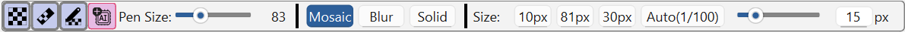
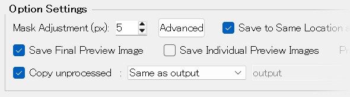
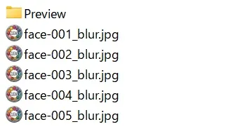
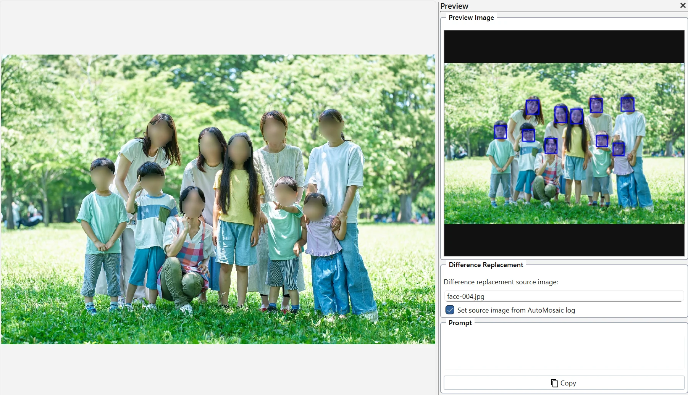
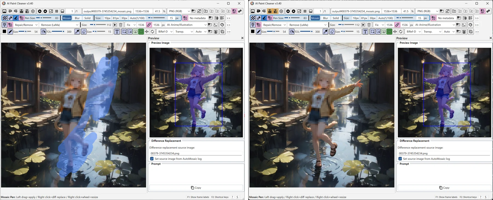

Mosaic
A dedicated tool that applies mosaic, blur or a solid color to the traced area. Tracing with a right-click restores the original pixels (diff replacement), which makes it ideal for finishing images processed by AutoMosaic.
Toolbar

| 1Mosaic rectangle | Applies to the rectangle you drag with the left button. Trace with a right-click to restore. |
| 2Mosaic bar | Applies to the band you drag with the left button. Trace with a right-click to restore. Width: right click + wheel. |
| 3Mosaic pen | Applies to the area you trace with the left button. Drawing a closed loop fills the inside too. Trace with a right-click to restore. |
| 4AI auto-select | When on, Shift+left click lets the AI pick the object and applies the mosaic to it. |
| 5Pen / bar size | Mosaic pen thickness and mosaic bar width (right click + wheel). |
| 6Type | Mosaic / Blur / Solid (switch with M / Shift+M). |
| 7Size presets | Frequently used mosaic sizes. Values can be set from 1–99 px in Settings (Shift+, / Shift+.). |
| 8Auto | Uses 1/100 of the image's long side as the mosaic size. |
| 9Size | Fine-tunes the mosaic size (, / .). |
Right-click restore (diff replacement) and filling closed loops are on by default. You can turn them off under Settings > Drawing.
Mosaic types
| Type | Description |
|---|---|
| Mosaic | Standard pixelation. Edge blur can be turned on or off in Settings. |
| Blur | Applies a Gaussian blur. |
| Solid | Fills with the palette color. Choose "Full" or "Outline" in Settings and set the outline width. |
Working with AutoMosaic
When you open an image processed by AutoMosaic, these two features are ready automatically.
① Open processed imagesAuto preview and diff source
Just open an AutoMosaic output image: the mosaic areas appear as a preview in the right sidebar, and the original (pre-mosaic) image is set as the diff replacement reference.
Learn more →② Remove unwanted mosaicsJust trace with a right-click
Because the reference is already set, tracing an unwanted mosaic restores the original pixels. Use right-click with the mosaic tools, or the "Diff Replace" category in the inpainting tools.
Learn more →① Open AutoMosaic output images
- 1Turn on "Save Final Preview Image" in AutoMosaic
Enable it in AutoMosaic's option settings before processing. A Preview folder is created in the output location.

- 2Open the output images in AI Paint Cleaner
Open the processed images located next to the Preview folder. Use ← → to go through them one by one.

- 3Preview and diff source appear automatically
The right sidebar shows a preview of the mosaic areas and the name of the original image used for diff replacement. Hold Alt+P to show the preview on the canvas.

② Remove unwanted AutoMosaic mosaics

1234| 1Mosaic tools | Select a mosaic tool. Tracing with a right-click performs diff replacement (restore). The "Diff Replace" category in the inpainting tools does the same. |
| 2Diff replacement source image | The original image is set automatically from the AutoMosaic log. If it's the wrong image, change it with Ctrl+R. |
| 3Trace with a right-click | Roughly trace the mosaic you want to remove with a right-click. |
| 4Restored | Only the traced area returns to the original pixels and the mosaic disappears. Add any missing mosaics by left-dragging. |
Hold Alt+R to show the reference image on the canvas and check it.
- Turn the automatic preview on or off with "Auto-show AutoMosaic Preview images", and the automatic source with "Automatically set source image from AutoMosaic log" in Settings.